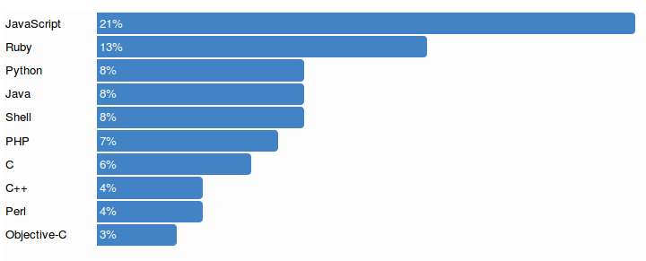
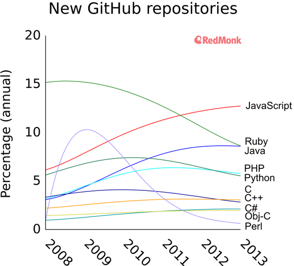
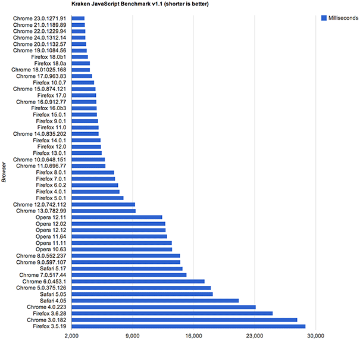
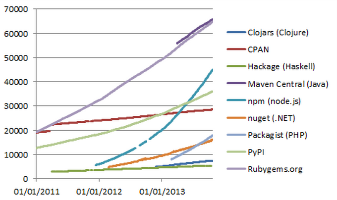
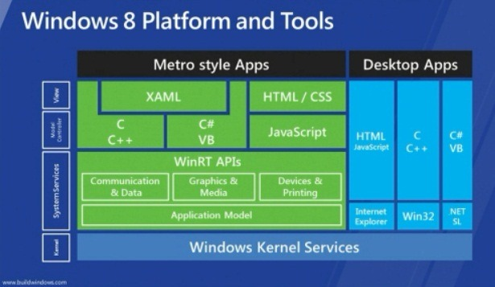
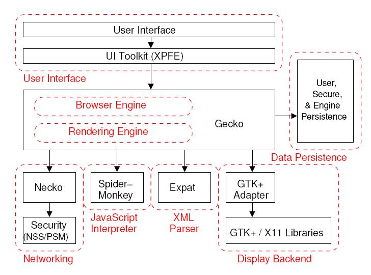

JavaScript
Introduction
Qu'est-ce ?
Le langage de script du web
Pourquoi JavaScript ?
- Web 2.0
- Cloud computing
- Jeux multi-joueurs en temp réel
- Widgets
- …
Un langage populaire
Unique langage de script pour les navigateurs
Popularité sur Github
Un langage populaire
Un langage performant
Le plein de modules
Une plateforme universelle
Le navigateur comme machine virtuelle
JavaScript comme lingua franca
Chrome OS
Firefox OS

Windows 8
Standalone JavaScript
Pas seulement pour le navigateur
Serveur HTTP
var http = require('http');
http.createServer(function (req, res) {
res.writeHead(200, {'Content-Type': 'text/plain'});
res.end('Hello World\n');
}).listen(1337, '127.0.0.1');
console.log('Server running at http://127.0.0.1:1337/');En production
- Chez Yahoo, PayPal, LinkedIn, Walmart ...
Mais aussi ...
- Google V8
- Rhino
- SpiderMonkey
Historique
Netscape, 1994
JS had to "look like Java" only less so, be Java's dumb kid brother or boy-hostage sidekick. Plus, I had to be done in ten days or something worse than JS would have happened.
Brendan Eich
Inspirations
Self, Scheme
Standard ECMAScript
- 1997 — ECMAScript 1
- 1998 — ECMAScript 2
- 1999 — ECMAScript 3
- 2009 — ECMAScript 5
- 201? — ECMAScript 6
ECMAScript Harmony
- Modules
- Isolation
- Proxy
- Générateurs
- Nouvelles structures
Écosystème
JavaScript est ...
- un langage de script
- dynamique
- non typé
- asynchrone
- fonctionnel
- object-based
Langage de script ?
Bash, Python, Lua, …
Utiles pour
- automatiser des tâches
- étendre un programme (add-on, mod)
Langages de script ?
Légers, peu de friction
- syntaxe simple
- expressifs
- prototypage rapide
Langage de script ?
Complexité d'un large projet ingérable
- absence de structure
- non typés
- erreurs dynamiques et silencieuses
Exemple
var subject = 'FING';
function greetSubject(greeting) {
return greeting + ' ' + subject;
}
['Hello', 'Bonjour', 'こんにちは', '⠓⠑⠇⠇⠕', 'ଶୁଣିବେ']
.map(greetSubject).join('\n');
Navigateur
Document Object Model
Représentation arborescente des documents HTML

HTML5 APIs
Bibliothèques
jQuery, Backbone, underscore, raphael, d3, three.js, socket.io, …
Variantes
CoffeeScript
Sucre syntaxique
list = [1..4]
square = (x) -> x * x
list.map square
1,4,9,16
CoffeeScript
Classe(s) !
class Animal
constructor: (@name) ->
move: (meters) ->
alert @name + " moved #{meters}m."
class Snake extends Animal
move: ->
alert "Slithering..."
super 5
class Horse extends Animal
move: ->
alert "Galloping..."
super 45
TypeScript
JavaScript + types
class Greeter {
greeting: string;
constructor (message: string) {
this.greeting = message;
}
greet() {
return "Hello, " + this.greeting;
}
}
TypeScript
Auto-complétion !

Dart
Le futur de JavaScript (d'après Google)
makeAdder(num x) {
return (num y) => x + y;
}
main() {
var add2 = makeAdder(2);
assert(add2(3) == 5);
}
Emscripten
Bitcode LLVM vers JavaScript
LLJS
Nostalgiques du C
let int x = 42;
let int *y = &x;
let int **z = &y;
trace(x);
*y = 1;
trace(x);
**z = 12;
trace(x);
**z = ***(&z);
const $M = require('memory');
$M.set_memcheck(false);
const $I4 = $M.I4, $U4 = $M.U4;
const $SP = $U4[1] -= 6;
var _ = $I4[$SP] = 42;
var _$1 = $U4[$SP + 2] = $SP;
var _$2 = $U4[$SP + 4] = $SP + 2;
trace($I4[$SP]);
$I4[$U4[$SP + 2]] = 1;
trace($I4[$SP]);
$I4[$U4[$U4[$SP + 4]]] = 12;
trace($I4[$SP]);
$I4[$U4[$U4[$SP + 4]]] = $I4[$U4[$U4[$SP + 4]]];
$U4[1] += 6;
Quand utiliser JavaScript ?
- manipulation du DOM
- exploiter les API HTML5
- AJAX: communication en arrière plan
Quand ne pas utiliser JavaScript ?
- animations (CSS)
- variante plus adaptée (côté client)
- langage plus adapté (côté serveur)